작은 힘으로 언덕도 거뜬하게 올라갈 수 있어요.
작은 힘으로 더 멀리, 스마트락으로 더 안전하게 따릉이를
이용해보세요.
이용안내
-
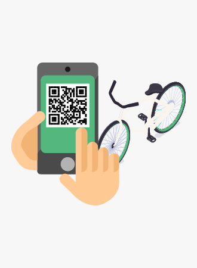
STEP 01.
‘따릉이’앱에서 대여하기 버튼을
누른 후, QR코드를 스캔해주세요. -
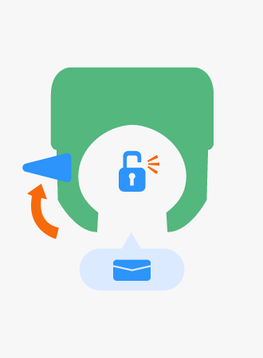
STEP 02.
‘대여 시작 메시지와 함께
자전거의 잠금이 해제돼요 -
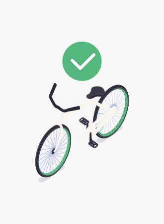
STEP 03.
즐거운 자전거 운행!
안전운행 하세요.
-
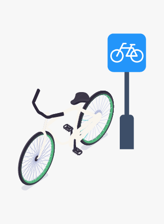
STEP 01.
가까운 '따릉이 대여소'를
찾아주세요. -
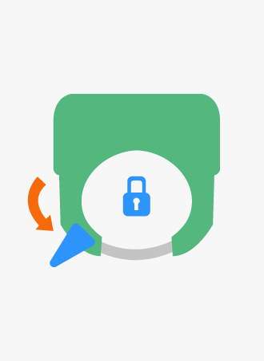
STEP 02.
자전거 뒷 부분에 있는 잠금장치를 잠근 후
잠시만 기다려주세요. -
STEP 03.
반납완료 메시지를
“꼭” 확인하시고, 이동하여 주세요.
따릉이는 운전자의 안전과
서울시민들의 안전을 중요시 생각합니다.
안전수칙
-
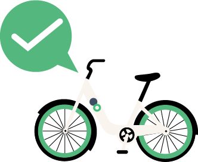
출발 전 점검
이용전 브레이크, 타이어, 체인. 안장 조임을 꼭 확인하세요.
-
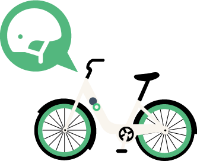
안전모 착용
안전한 주행을 위해 주행시 안전모를 착용하세요.
-
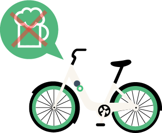
음주 운전 금지
자전거도 차와 같이 교통법규를 지켜야 합니다.
음주 후 이용시 도로교통법에 따라 처벌받습니다. -
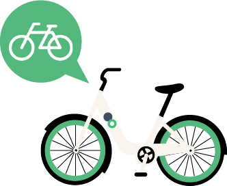
자전거도로 이용
자전거 도로를 이용하고, 없는 경우 차도 우측 가장자리에 붙어서 통행합니다.
이때 2대 이상 나란히 통행하지 않습니다. -
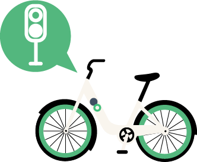
횡단보도 이용시
횡단보도에서는 자전거를 끌고 보행해야 합니다.
-
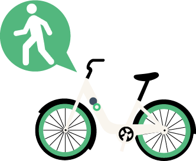
보행자 배려
보행자의 통행에 방해가 될 경우 일시정지하고,
보행자 보호를 위해 가속하지 않습니다. -

주행중 기타행위 금지
주행시 핸들을 놓거나 이어폰, 핸드폰을 사용하지 않습니다.